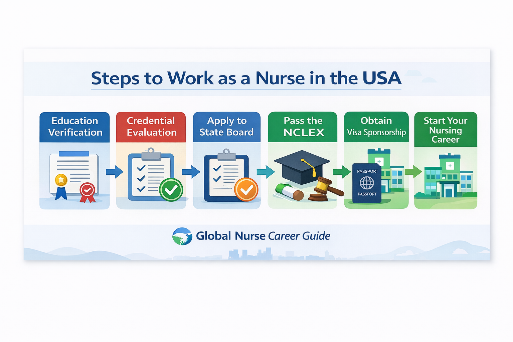

Step-by-step guide for international nurses including licensing and visa sponsorship.
The United States has one of the largest healthcare systems in the world and continues to experience nursing shortages in many hospitals and healthcare facilities. Because of this demand, international nurses have opportunities to work in the U.S. after meeting licensing and immigration requirements.
International nurses must have their education evaluated to confirm that their nursing degree is equivalent to U.S. standards. This process verifies academic coursework and clinical training hours.
A widely recognized organization that performs credential evaluations is CGFNS International.
Nursing in the United States is regulated by individual states. Each state has a Board of Nursing responsible for licensing nurses.
Examples include:
Applicants must submit required documentation including transcripts, license verification, and identification documents.
The NCLEX-RN exam is the national licensing exam for registered nurses in the United States. The exam evaluates clinical decision making and patient care knowledge.
Topics tested include:
International nurses must obtain legal authorization to work in the United States. Many nurses obtain employment through the EB-3 immigrant visa program. Hospitals facing nursing shortages may sponsor qualified international nurses.
Once licensed and authorized to work, nurses can apply for positions in hospitals, long-term care facilities, and healthcare organizations.

This infographic explains the major steps international nurses must complete to work in the United States, including credential evaluation, NCLEX examination, and visa sponsorship.